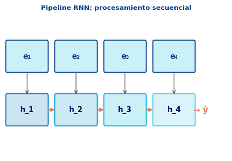
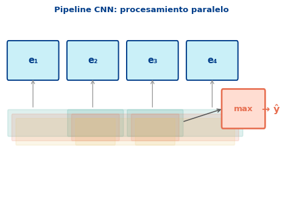
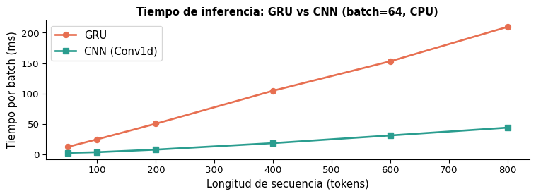
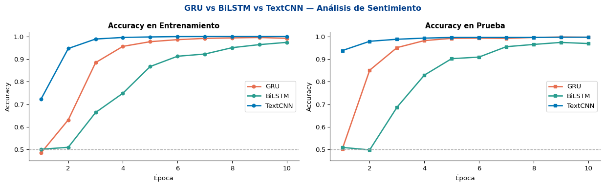
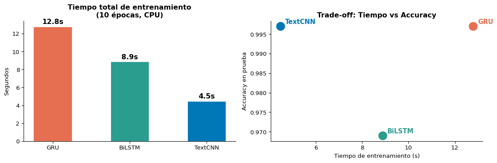
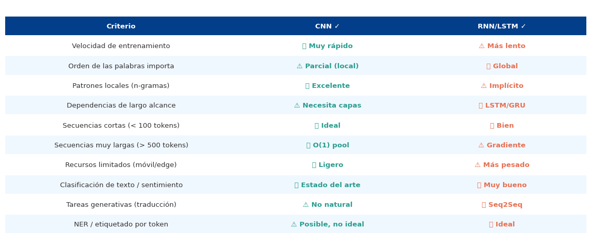
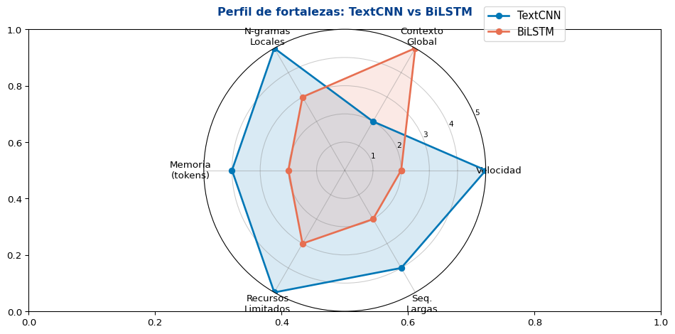
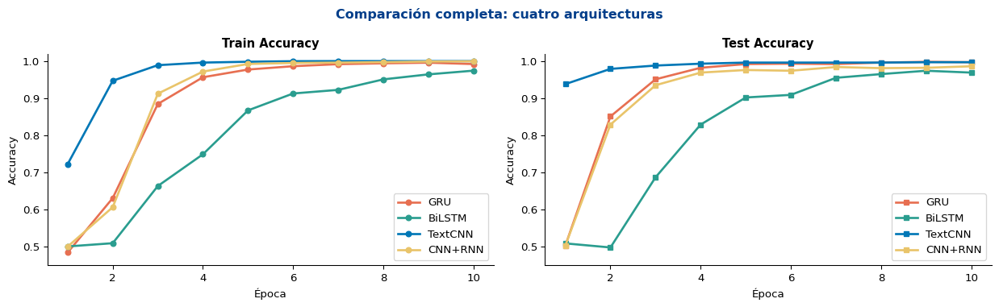
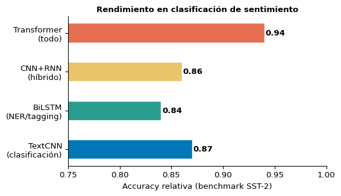

S3: Comparación RNNs vs. CNNs para Clasificación
Universidad Católica Boliviana
2026-04-11
Objetivo
Comparar RNNs y CNNs de forma sistemática — teórica y empíricamente — para saber qué arquitectura elegir según la tarea y las restricciones del proyecto.
Prerequisitos: RNNs/LSTM/GRU (Semana 6), Conv1D + Pooling (S1 y S2)
Texto → Embeddings → RNN → h_T → ClasificadorPaso a paso: 1. Tokens → embeddings: \(\mathbf{e}_1, \ldots, \mathbf{e}_T \in \mathbb{R}^d\) 2. GRU/LSTM procesa secuencialmente: \[\mathbf{h}_t = f(\mathbf{h}_{t-1}, \mathbf{e}_t)\] 3. Toma \(\mathbf{h}_T\) (o promedio de todos \(\mathbf{h}_t\)) 4. \(\hat{y} = \text{softmax}(\mathbf{W}\mathbf{h}_T + \mathbf{b})\)
Note
Dependencia temporal: el estado \(\mathbf{h}_t\) depende de \(\mathbf{h}_{t-1}\), lo que hace el procesamiento inherentemente secuencial.

Texto → Embeddings → Conv1D → Pooling → ClasificadorPaso a paso: 1. Tokens → embeddings: matriz \(\mathbf{E} \in \mathbb{R}^{T \times d}\) 2. Filtros convolucionales en paralelo: \[h_i = \text{ReLU}(\mathbf{W} \cdot \mathbf{e}_{i:i+k-1} + b)\] 3. Global max pooling: \(\hat{h} = \max_i h_i\) 4. \(\hat{y} = \text{softmax}(\mathbf{W}\hat{\mathbf{h}} + \mathbf{b})\)
Note
Sin dependencia temporal: todos los \(h_i\) se calculan simultáneamente — el procesamiento es completamente paralelo.

\[\mathbf{h}_t = f(\mathbf{h}_{t-1}, \mathbf{e}_t)\]
\[h_i = \text{ReLU}(\mathbf{W} \cdot \mathbf{e}_{i:i+k-1} + b)\]
nn.Conv1d
| RNN/LSTM | CNN | |
|---|---|---|
| Contexto teórico | Global (\(T\) tokens) | Local (\(k\) tokens por filtro) |
| Contexto práctico | ~100–200 tokens útiles | Explícito, controlado por \(k\) |
| Dependencias largas | Con LSTM/GRU | Con capas apiladas |
| Captura de n-gramas | Implícita | Explícita y eficiente |
import torch.nn as nn
def count_params(model):
return sum(p.numel() for p in model.parameters() if p.requires_grad)
V, D = 20000, 128 # vocabulario, dimensión embedding
H = 256 # tamaño oculto / canales
# GRU
gru_model = nn.Sequential(
nn.Embedding(V, D),
nn.GRU(D, H, batch_first=True)
)
# BiLSTM
class BiLSTM(nn.Module):
def __init__(self):
super().__init__()
self.emb = nn.Embedding(V, D)
self.lstm = nn.LSTM(D, H // 2, bidirectional=True, batch_first=True)
self.fc = nn.Linear(H, 2)
def forward(self, x):
o, _ = self.lstm(self.emb(x))
return self.fc(o[:, -1])
# TextCNN (Kim 2014)
class TextCNN(nn.Module):
def __init__(self, filter_sizes=(3,4,5), num_filters=100):
super().__init__()
self.emb = nn.Embedding(V, D)
self.convs = nn.ModuleList([
nn.Conv1d(D, num_filters, fs) for fs in filter_sizes
])
self.fc = nn.Linear(num_filters * len(filter_sizes), 2)
def forward(self, x):
e = self.emb(x).transpose(1, 2)
pooled = [f.relu(conv(e)).max(dim=2).values for conv in self.convs]
return self.fc(torch.cat(pooled, dim=1))
import torch.nn.functional as f
import torch
gru = nn.GRU(D, H, batch_first=True)
bilstm = BiLSTM()
textcnn = TextCNN()
print(f"GRU (enc + emb): {count_params(gru) + V*D:>10,} parámetros")
print(f"BiLSTM (full): {count_params(bilstm):>10,} parámetros")
print(f"TextCNN (Kim 2014): {count_params(textcnn):>10,} parámetros")GRU (enc + emb): 2,856,448 parámetros
BiLSTM (full): 2,824,706 parámetros
TextCNN (Kim 2014): 2,714,502 parámetrosTip
TextCNN es el modelo más ligero de los tres — una ventaja significativa cuando los recursos son limitados o se necesita inferencia rápida.
import torch
import torch.nn as nn
import numpy as np
from torch.utils.data import DataLoader, TensorDataset
torch.manual_seed(0)
np.random.seed(0)
VOCAB = 5000
D = 64
MAX_LEN = 40
N_TRAIN = 4000
N_TEST = 1000
# Tokens con señal semántica
POS_TOKENS = list(range(10, 60)) # palabras positivas
NEG_TOKENS = list(range(60, 110)) # palabras negativas
def make_dataset(n, max_len=MAX_LEN):
seqs, labels = [], []
for _ in range(n):
label = np.random.randint(0, 2)
length = np.random.randint(15, max_len + 1)
seq = np.random.randint(200, VOCAB, size=length)
# insertar bigramas semánticos
signal = POS_TOKENS if label == 1 else NEG_TOKENS
for _ in range(np.random.randint(2, 5)):
pos = np.random.randint(0, max(1, length - 2))
seq[pos] = np.random.choice(signal)
seq[pos + 1] = np.random.choice(signal)
padded = np.zeros(max_len, dtype=np.int64)
padded[:length] = seq[:max_len]
seqs.append(padded)
labels.append(label)
return torch.tensor(seqs), torch.tensor(labels)
X_tr, y_tr = make_dataset(N_TRAIN)
X_te, y_te = make_dataset(N_TEST)
train_dl = DataLoader(TensorDataset(X_tr, y_tr), batch_size=64, shuffle=True)
test_dl = DataLoader(TensorDataset(X_te, y_te), batch_size=256)
print(f"Train: {X_tr.shape}, Test: {X_te.shape}")Train: torch.Size([4000, 40]), Test: torch.Size([1000, 40])¿Por qué sintético?
Modelos a comparar:
| Modelo | Tipo | Config |
|---|---|---|
| GRU | RNN | H=128 |
| BiLSTM | RNN | H=64×2 |
| TextCNN | CNN | k=3,4,5 |
class GRUClassifier(nn.Module):
def __init__(self, vocab=VOCAB, d=D, h=128):
super().__init__()
self.emb = nn.Embedding(vocab, d, padding_idx=0)
self.gru = nn.GRU(d, h, batch_first=True)
self.drop = nn.Dropout(0.3)
self.fc = nn.Linear(h, 2)
def forward(self, x):
e = self.drop(self.emb(x))
_, h = self.gru(e)
return self.fc(self.drop(h.squeeze(0)))
class BiLSTMClassifier(nn.Module):
def __init__(self, vocab=VOCAB, d=D, h=64):
super().__init__()
self.emb = nn.Embedding(vocab, d, padding_idx=0)
self.lstm = nn.LSTM(d, h, bidirectional=True, batch_first=True)
self.drop = nn.Dropout(0.3)
self.fc = nn.Linear(h * 2, 2)
def forward(self, x):
e = self.drop(self.emb(x))
out, _ = self.lstm(e)
# combinar últimos estados de ambas direcciones
return self.fc(self.drop(out[:, -1]))
class TextCNNClassifier(nn.Module):
def __init__(self, vocab=VOCAB, d=D, n_filters=64, filter_sizes=(3, 4, 5)):
super().__init__()
self.emb = nn.Embedding(vocab, d, padding_idx=0)
self.convs = nn.ModuleList([
nn.Conv1d(d, n_filters, fs) for fs in filter_sizes
])
self.drop = nn.Dropout(0.3)
self.fc = nn.Linear(n_filters * len(filter_sizes), 2)
def forward(self, x):
e = self.emb(x).transpose(1, 2) # (B, D, T)
pooled = [
torch.relu(conv(e)).max(dim=2).values
for conv in self.convs
]
return self.fc(self.drop(torch.cat(pooled, dim=1)))
models = {
"GRU": GRUClassifier(),
"BiLSTM": BiLSTMClassifier(),
"TextCNN": TextCNNClassifier(),
}
for name, m in models.items():
npar = sum(p.numel() for p in m.parameters() if p.requires_grad)
print(f"{name:10s}: {npar:8,} parámetros")GRU : 394,754 parámetros
BiLSTM : 386,818 parámetros
TextCNN : 369,730 parámetrosimport time
def train_model(model, train_dl, test_dl, epochs=10, lr=1e-3):
opt = torch.optim.Adam(model.parameters(), lr=lr)
criterion = nn.CrossEntropyLoss()
history = {'train_acc': [], 'test_acc': []}
t_start = time.perf_counter()
for epoch in range(epochs):
model.train()
correct = total = 0
for xb, yb in train_dl:
opt.zero_grad()
logits = model(xb)
loss = criterion(logits, yb)
loss.backward()
opt.step()
correct += (logits.argmax(1) == yb).sum().item()
total += len(yb)
train_acc = correct / total
model.eval()
correct = total = 0
with torch.no_grad():
for xb, yb in test_dl:
logits = model(xb)
correct += (logits.argmax(1) == yb).sum().item()
total += len(yb)
test_acc = correct / total
history['train_acc'].append(train_acc)
history['test_acc'].append(test_acc)
elapsed = time.perf_counter() - t_start
return history, elapsed
results = {}
print(f"{'Modelo':<12} {'Acc Train':>10} {'Acc Test':>10} {'Tiempo (s)':>12}")
print("-" * 48)
for name, model in models.items():
hist, elapsed = train_model(model, train_dl, test_dl, epochs=10)
results[name] = {'history': hist, 'time': elapsed}
print(f"{name:<12} {hist['train_acc'][-1]:>10.3f} {hist['test_acc'][-1]:>10.3f} {elapsed:>12.2f}")Modelo Acc Train Acc Test Tiempo (s)
------------------------------------------------
GRU 0.992 0.997 12.78
BiLSTM 0.974 0.969 8.88
TextCNN 1.000 0.997 4.47

Important
Observación clave: TextCNN alcanza accuracy competitivo en significativamente menos tiempo. La diferencia de velocidad se amplifica con GPUs y secuencias más largas.


Texto → Embeddings
↓
Conv1D (captura n-gramas)
↓
ReLU + pooling local
↓
GRU/LSTM (captura secuencia de patrones)
↓
h_T → ClasificadorTip
La CNN actúa como un extractor de características que reduce la longitud de secuencia antes de la RNN — reduciendo el problema del gradiente que desaparece.
class CNNRNNClassifier(nn.Module):
"""
CNN extrae características locales,
RNN captura su secuencia temporal.
"""
def __init__(self, vocab=VOCAB, d=D,
n_filters=64, kernel=3, h=128):
super().__init__()
self.emb = nn.Embedding(vocab, d, padding_idx=0)
self.conv = nn.Conv1d(d, n_filters, kernel,
padding=kernel // 2)
self.gru = nn.GRU(n_filters, h, batch_first=True)
self.drop = nn.Dropout(0.3)
self.fc = nn.Linear(h, 2)
def forward(self, x):
# CNN: extraer patrones locales
e = self.emb(x).transpose(1, 2) # (B,D,T)
c = torch.relu(self.conv(e)) # (B,F,T)
c = c.transpose(1, 2) # (B,T,F)
# RNN: modelar secuencia de patrones
_, h = self.gru(self.drop(c))
return self.fc(self.drop(h.squeeze(0)))
hybrid = CNNRNNClassifier()
npar = sum(p.numel() for p in hybrid.parameters() if p.requires_grad)
print(f"CNN+RNN: {npar:,} parámetros")CNN+RNN: 407,106 parámetros
Resumen final:
Modelo Acc Test Tiempo (s)
------------------------------------
GRU 0.997 12.78
BiLSTM 0.969 8.88
TextCNN 0.997 4.47
CNN+RNN 0.986 13.25
“All models are wrong, but some are useful.”
— George Box
La elección depende de:

Important
Los Transformers (próxima semana) superan a CNN y RNN, pero requieren más datos y recursos.
| Dimensión | CNN | RNN |
|---|---|---|
| Paralelismo | ✅ Total | ⚠️ Secuencial |
| N-gramas | ✅ Explícito | ⚠️ Implícito |
| Contexto largo | ⚠️ Capas | ✅ LSTM/GRU |
| Velocidad | ✅ Rápido | ⚠️ Lento |
| Parámetros | ✅ Pocos | ⚠️ Más |
CNN: - Clasificación de texto / sentimiento - Detección de spam, tópicos - Recursos limitados - Baseline rápido
RNN/LSTM: - Traducción / generación - NER, POS tagging - Dependencias de largo alcance
CNN+RNN: - Documentos largos con estructura local - Cuando CNN sola no capta suficiente contexto
Note
Pregunta motivadora: ¿Puede un modelo capturar contexto global sin procesar la secuencia paso a paso (RNN) ni limitarse a ventanas locales (CNN)?
Respuesta: el mecanismo de auto-atención
\[\text{Attention}(Q, K, V) = \text{softmax}\!\left(\frac{QK^\top}{\sqrt{d_k}}\right)V\]
¿Por qué la atención supera tanto a CNN como a RNN en tareas de lenguaje si la primera se “ve” como más sencilla en su definición?
NLP y Análisis Semántico | Semana 8